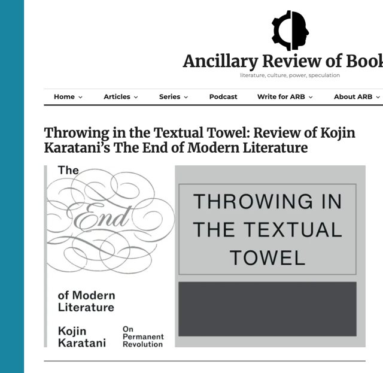
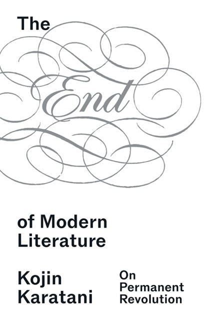
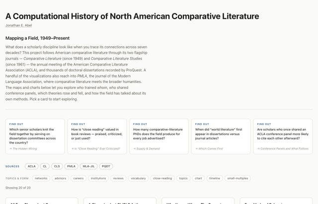
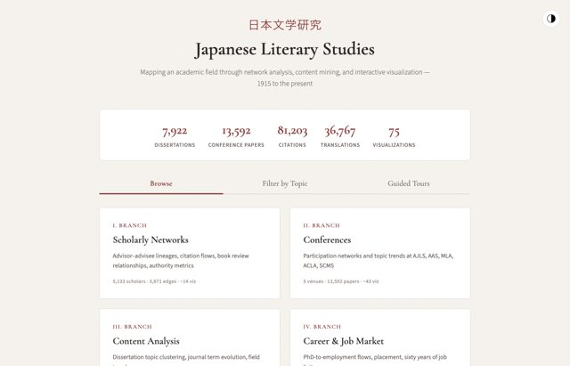
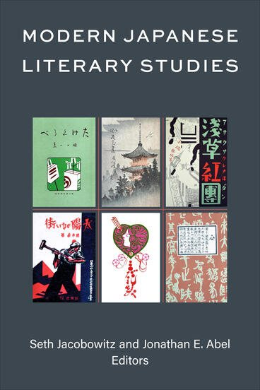
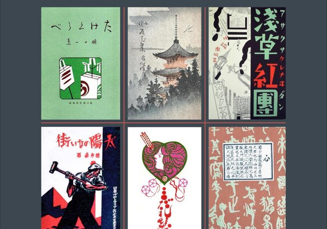
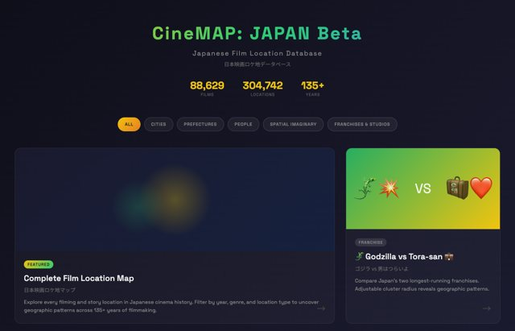

September 24, 2026Review
First review of The End of Modern Literature
Bruce J. Krajewski reviewed the Verso volume in the Ancillary Review of Books under the title “Throwing in the Textual Towel,” taking up Karatani’s thesis that the modern novel has ended and the volume’s responses to it.

August 18, 2026Publication
Karatani’s The End of Modern Literature from Verso
Verso published Karatani Kōjin’s The End of Modern Literature: On Permanent Revolution, which I co-edited with Hiroki Yoshikuni and Yoshiki Tajiri. Karatani’s essay appears with responses from Fredric Jameson, Bruce Robbins, Kenneth W. Warren, Gauri Viswanathan, Andrew Gibson, Young-il Cho, Yoshiki Tajiri, Michael K. Bourdaghs and me. My essay asks what Karatani’s “end of literature” can tell us about the arrival of AI novels in Japan.

May 29, 2026Project
A Computational History of Comparative Literature
I launched an interactive computational history of comparative literature in North America, visualizing the discipline’s growth and its changing interests.

March 11, 2026Project
State of the Field: Visualizing Japanese Literary Studies
The interactive companion to Modern Japanese Literary Studies went live: network maps and charts of dissertations, scholars and topics that let readers explore the data behind “Stating the Field.”

March 2026Publication
Modern Japanese Literary Studies, open access
Modern Japanese Literary Studies, co-edited with Seth Jacobowitz, is out from the University of Michigan Press and free to read. Sixteen scholars in North America, Asia and Europe take stock of the field since the late 1990s. Our introduction, “Stating the Field,” maps the shifts in canon, method, media studies, translation and Japanophone literature.

February 3, 2026Talk
The Crisis of the Humanities and the Future of Japanese Studies
Seth Jacobowitz and I launched Modern Japanese Literary Studies with a public conversation at the University of Pittsburgh, co-sponsored by Pitt’s Asian Studies Center and Carnegie Mellon. We talked about what the book argues and about the pressures and possibilities facing the field now.

January 3, 2026Project
CineMAP Japan visualizations go live
The CineMAP: Japan Beta visualizations went online: interactive maps and charts built on the film-location database, including views that cluster films by series and franchise. They turn the data behind the 2024 beta into something anyone can explore in a browser.